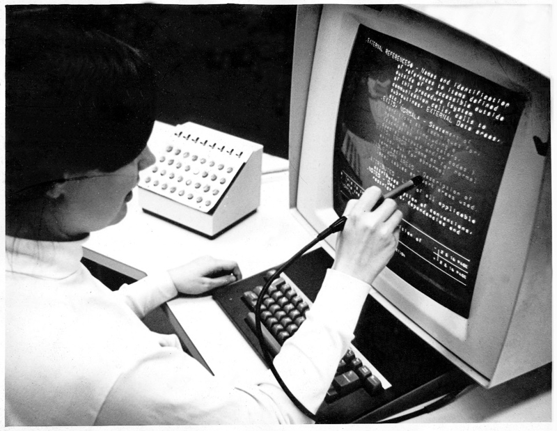

Tema 2:
--Tema a investigar --
Interaccion humano ordenador
Es el campo multidisciplinario enfocado en el diseño de tecnología computación y en particular en la interacción de usuarios y computadoras el cual comienza su auge en los 80s con computadoras Apple, IBM, etc., el cual comienza a cambiar los entornos de oficina y hogares, ya que, por primera vez, sistemas de electrónica sofisticada era disponible a los usuarios para usos como Word, juegos, etc. La IHO se vuelve un área de alta investigación académica, enfocada a la mejora de la usabilidad de computadoras de escritorio, sin embargo, el auge de tecnologías como el internet o los teléfonos inteligentes, los computadores de escritorios poco has sido desplazados por el mundo de los dispositivos móviles. El IHC es un área que se solapa con otras como lo puede ser la usabilidad, la interfaz de usuario y la experiencia de usuario, y en muchas formas, la IHC fue precursor de la experiencia de usuario, sin embargo el IHC es más del ámbito académico y la experiencia de usuario es más enfocado a la industria que se enfoca en construir bienes y servicios como lo puede ser la interfaz de un sistema operativo o un sitio web. Entonces como podemos ver, cuando se hace bien, se pueden aprovechar los puntos claves para lograr mejores diseños a los usuarios al cooperar con el mundo de la IHC, y de esta forma los diseñadores pueden impulsar cambios importantes en el mercado y la sociedad
referencias
Interaction Design Foundation. (2014). What is Human-Computer Interaction (HCI)? The Interaction Design Foundation; UX courses. https://www.interaction-design.org/literature/topics/human-computer-interaction